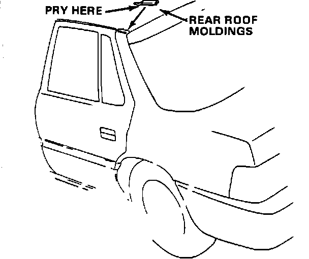
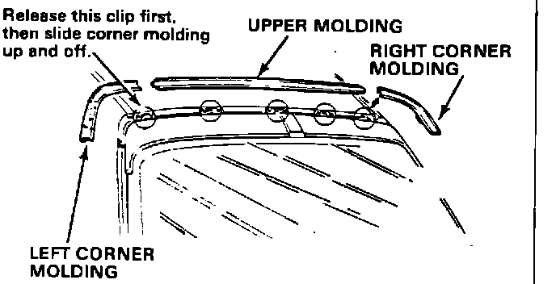
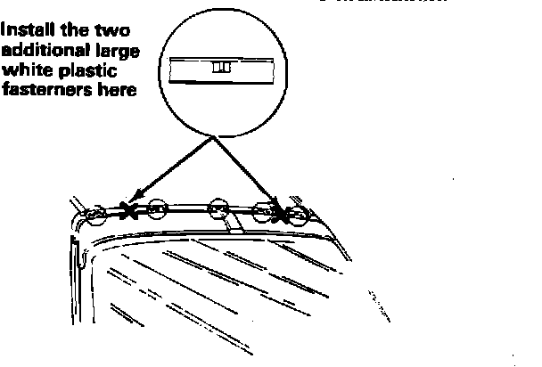

Rear Window - Upper Molding Loose
86acura01September 22, 1986
YEAR MODEL APPLICATION
1986 LEGEND ALL
86-012
Rear Window Upper Molding Loose

CORRECTIVE ACTION
Install a rear window upper molding kit (listed under parts information):
1. Remove the rear roof moldings from above the rear window by prying up on their forward edges.

2. Remove the corner molding using a molding clip release tool (see the '86 Legend Service Manual, page 20-17, for dimensions of one type):
^ Slide the tool under the upper forward edge of the molding, and release the upper clip.
^ Slide the comer molding up and toward the front of the car to release it from the side clip.
3. Remove the upper molding.
4. Replace the five original blue upper molding clips with the new blue clips provided in the kit.

5. Remove the two original large white plastic fasteners from the body and replace them with two of the four new large white fasteners provided in the kit. Apply the two additional fasteners in the locations shown in the illustration.
6. Fit the corner moldings into the new upper molding.
7. Apply, 3M Super Weatherstrip Adhesive (P/N 08008) to the undersides of the upper and corner moldings, as well as their contact surfaces on the body.
8. Install the upper and corner molding assembly with the help of an assistant:
^ Slide the lower ends of the corner moldings into place.
^ Push the upper molding onto its clips.
PARTS INFORMATION
Rear window upper molding kit:
P/N 73270-SD4-305
WARRANTY CLAIM INFORMATION
Operation number: 832150
Flat rate time: 0.4 hour Failed P/N: 73251-SD4-003
Contention code: A02
Defect code: 061